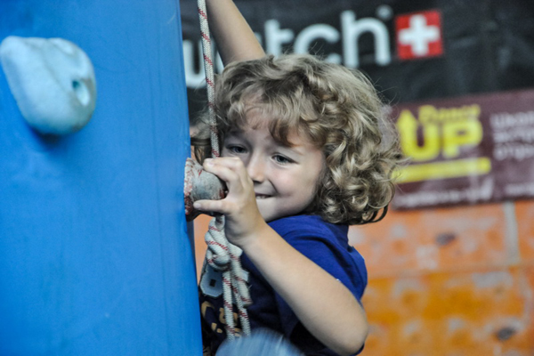

Скелелазіння – самостійний вид спорту, який пов’язаний з альпінізмом. Спортсмени можуть лазити як по природному рельєфу (скелі), так і по штучному (скеледромі). Від альпінізму скелелазіння відрізняється наявністю статичних точок опори та не можливістю використовувати спецінструменти чи додаткове спорядження.
Також є різновиди спортивного скелелазіння, наприклад боулдеринг – проходження серії коротких, але дуже складних трас на незначній висоті (3-5 метрів), аби уникнути травм при падінні, бо в боулдерингу не користуються страховкою; а також скелелази змагаються у складності та швидкості.
Цей вид в Україні визнали на офіційному рівні, він входить до реєстру як олімпійський вид спорту.
Також є різновиди спортивного скелелазіння, наприклад боулдеринг – проходження серії коротких, але дуже складних трас на незначній висоті (3-5 метрів), аби уникнути травм при падінні, бо в боулдерингу не користуються страховкою; а також скелелази змагаються у складності та швидкості.
Цей вид в Україні визнали на офіційному рівні, він входить до реєстру як олімпійський вид спорту.